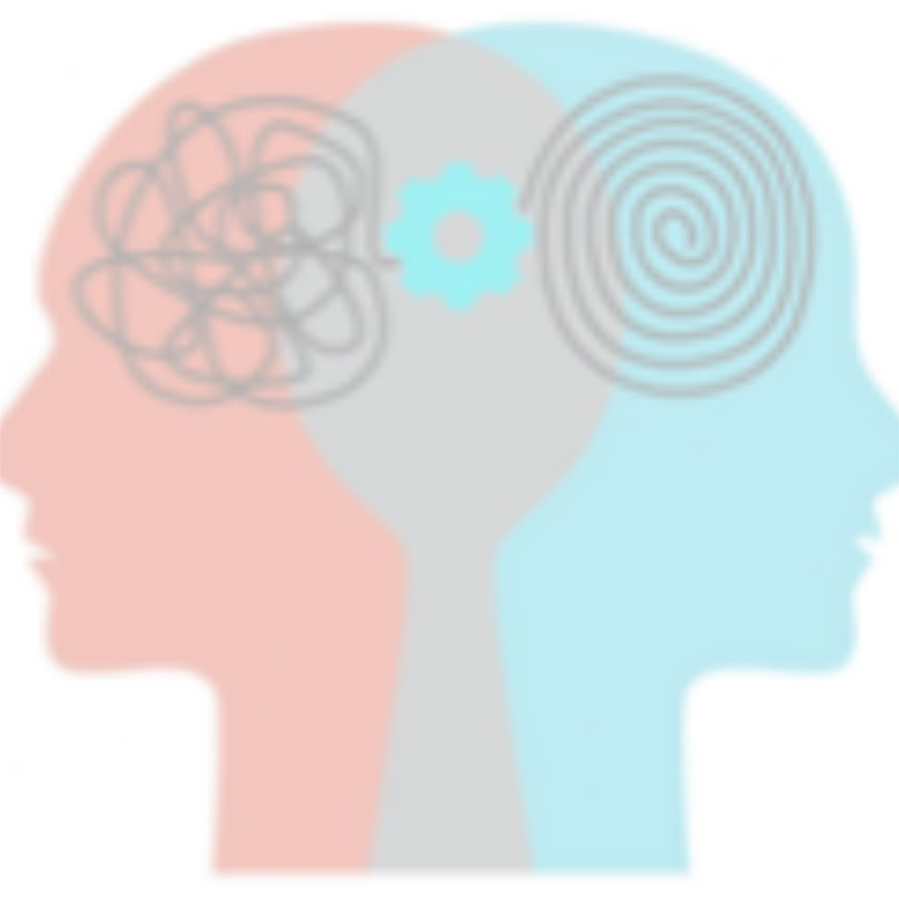
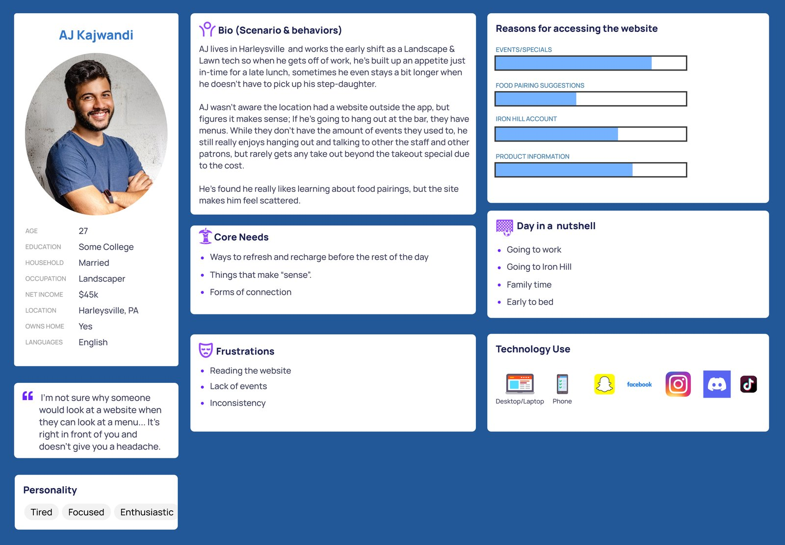
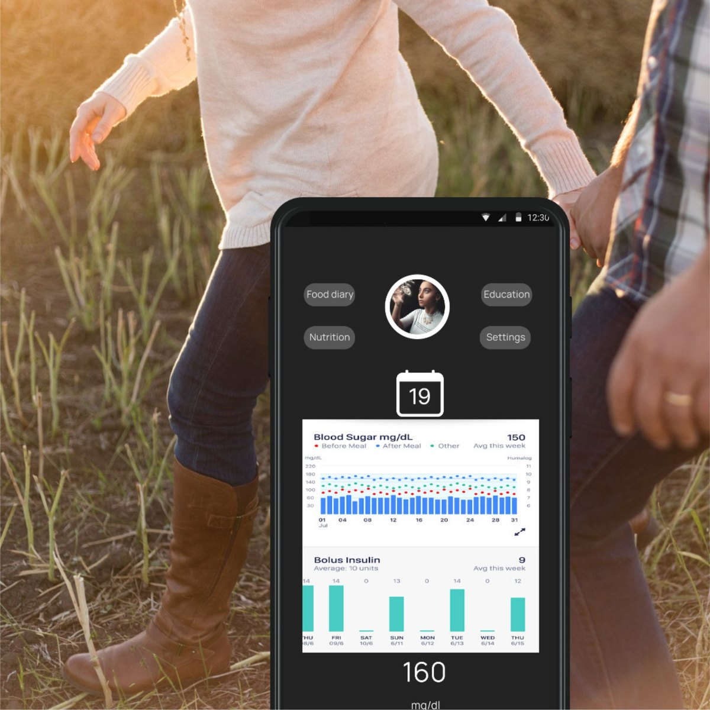
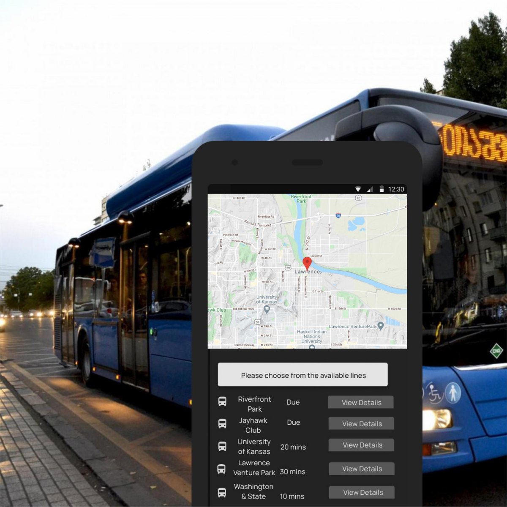

Jim Folliard
Senior UX Designer
MS in User Experience from Arizona State University. Founder of JF Studio, where since 2012 I've worked on UX, narrative design, and technical writing for clients in healthcare, education, and indie games.
Remote, or hybrid in the Philadelphia area.
Featured work
-

Improving Access to Care
A co-designed study on technological interventions to alleviate barriers for individuals seeking mental health support.
Team of 3 graduate students, 8 weeks
-

Iron Hill Brewery Website Redesign
A solo UX redesign of a regional brewery and restaurant website, focused on navigation clarity, menu accessibility, and information hierarchy.
Solo project, 8 weeks
-

Morpheus: Pleasant Dreams
A centralized platform for people with disruptive sleep patterns, often due to trauma, that translates neural data into material they can share with a sleep specialist.
UX/UI bootcamp project
-

Diabetty
A diabetic maintenance app that supports both diabetic and caretaker, with a toolkit for staying compliant and a connection to medical advice when needed.
5-day design sprint
-

Tempestuous Rider
A bus app with snark to liven up riders' journeys, for the rider who wants to get somewhere on a budget.
Course project
-
Gamification in Learning
A multi-page educational microsite for a graduate instructional design course at Arizona State University, researching and presenting gamification, cognitivism, and serious games.
Solo project, Summer 2024
What people say
“Jim has amazing attention to detail! It was great having him lead the effort for our new app build. Jim fit well into our ongoing staff and hit the ground running! From start to finish, it was an absolute pleasure to work with Jim!”
“Jim has a comprehensive, thoughtful and insightful understanding of design, especially how elements fit within the larger context of a project. He communicates his thoughts clearly and concisely. One of Jim's special qualities that I observed is how he improves the communication within a team, and thus, the work it produces.”
“From the time I have known Jim, he has always contributed to the team in more ways than imaginable, from project deliverables to genuine support and encouragement. Skilled in UX Writing plus Interface, Visual, and Narrative Design, his creativity and insight are key during the Discovery and Ideation phases in the design process. Jim is certainly the professional you want on your team!”
“James is a supportive, trusted, and highly skilled UX Designer with an eye for detail and an arsenal of multi-functional talents. His creativity and ability to think outside the box are a delight to witness, and his kindness and empathy make him a joy to work with. He would be an asset to any team.”
All work
-
UX design
Research, flows, prototypes, and usability testing.
-
UI and visual design
UI screens, illustrations, 3D renders, and photographs.
-
Narrative design
Branching narrative, character voice, and writing to game systems and screen limits.
-
Game design
Mechanics, stat checks, and replayable structure.
- Heroes Guard: The Journal
- Linelight: Game Mechanics Documentation
- Earlier projects from my game programming degree: Lawn Ninja, Year of the Rat, and Etherite
-
Technical writing
Documentation written for the people who read it: designers, engineers, or a legal team.
-
AI-assisted tools and systems
Tools and systems I designed and built with AI assistance, kept in their own section.